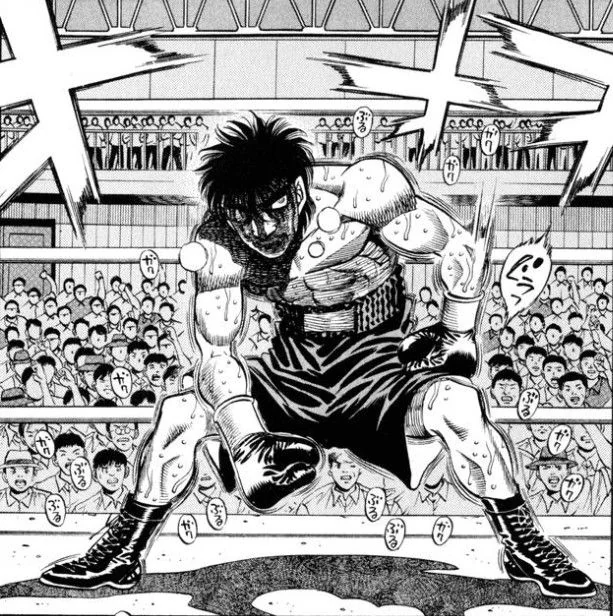
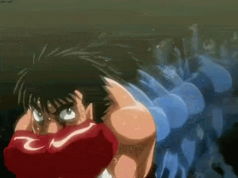
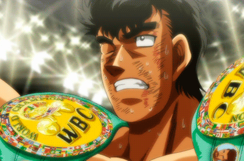

|  |
Kamogawa is the first world champion in Japanese Boxing History!. He beat an american soldier after the war in an official boxing match by breaking his ribs and ultimatley knocking him out And he gets the name IRON FIST!. He also owns Kamogawa gym and is a personal coach for World Champion Boxers! |
IRON FIST |
|  |
Ippo First joined boxing when he was motivated to change. He went from being bullied to being japans first World Champion in the Lightweight class! |
Peakaboo style |
|  |
TAKAMURAAAA THE CHAMPION! TWO TIME Middleweight Champion Of JAPAN! He was a gangster/bully and didnt know what to do in his life , then kamogawa saw potential and made him a boxing WORLD CHAMP! |
SLUGGER |
 |
Miyata! miyata was motivated to start and become a champion by his dad, he wanted to avenge his dad by fighting RANDY BOY JR the guy that beat his dad. |
Counter |